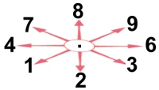

ommands are given either with the mouse or by typing one or two characters.
If you left-click an object, creature or location in the main view, Vulture's Eye will try to perform a default action for that object, creature or location.
The default actions are:
- click a distant location to move closer to it
- click a closed door to open it
- click a hostile creature next to you to attack it
- at a fountain, click on yourself to take a drink
- on a stairwell, click on yourself to climb it
- on an object, click on yourself to pick it up
- at a chest, click on yourself to loot the chest
- otherwise, click on yourself to search your vicinity
You can also right-click an object, creature or location. This brings up a context menu which lists a number of likely commands. Click any of the command buttons in the menu to perform that command, or click outside the menu to dismiss it. For example, to kick a door, right-click it and select "kick" from the menu. (You might need to move closer first.)
Some commands require more information, for example a direction, or an object to be used. If a command requires more information, NetHack will show you a menu of choices or a command line prompt requesting information. Which one it is depends on the menustyle option.
For example, a common question like “What do
you want to use? [a-zA-Z ?*]”, asks you to choose an object you
are carrying. Here, “a-zA-Z” are the inventory letters
of your possible choices. Type ‘?’ to see an inventory list of these items,
so you can see what the letters refer to. In this example, there is
also a ‘*’, indicating that you may choose an object not on the list, if
you wanted to use something unexpected. Typing a ‘*’ lists
your entire inventory.
Finally, if you don't want to do this command after all,
you can press the esc key to cancel the command.
You can put a number before some commands to repeat them; for example, “n10s” will search ten times.
Commands for which counts make no sense ignore them. To cancel a count or a prefix, press the ESC key.
Every command in Vulture's is accessible with the mouse.
Commands involving objects in your inventory can be acessed by opening
the inventory and right-clicking the object.
Most other commands can be invoked by right-clicking on yourself or some part of the dungeon.
Finally, a handful of rarely used commands are available only from the extended commands menu
These commands (once again with the exception of a few extended commands) all have keyboard shortcuts. Using these is faster than using the mouse, so you will probably want to learn them eventually. The best way to go about that is to look up the key whenever you find you are performing an action frequently, rather than trying to memorize them all at once.
The list of keyboard commands is rather long, but it can be read
at any time during the game through the help button,
which displays a menu of helpful texts.
Here are the commands for your reference:
4.1 Getting help
| / | Tell what a symbol represents. You may choose to specify a location or type a symbol (or even a whole word) to explain. Specifying a location is done by a spot on the map with the mouse. |
| ? | Help menu: display one of several help texts available. |
| & | Tell what a command does. |
| ; | Show what type of thing a visible symbol corresponds to. |
| ^ | Ask for the type of a trap you found earlier. |
| \ | Show what types of objects have been discovered. |
4.2 Moving and exploring
| 1 to 9 | Go one step in the direction indicated (see the figure below).
If you can sense a monster there, you will fight the
monster instead. Only these one-step movement commands cause you
to fight monsters; the others (below) are “safe.” Movement prefixes can alter the way these keys behave.  |
| m | Prefix: move without picking up objects or fighting (even if you remember a monster there) |
| F | Prefix: fight a monster (even if you only guess one is there) |
| M | Prefix: move far, no pickup. |
| g | Prefix: move until something interesting is found. |
| G | Prefix: same as g, but forking of corridors is not considered interesting. |
| _ | Travel to a map location via a shortest-path algorithm. The
shortest path is computed over map locations the hero knows
about (e.g. seen or previously traversed). If there is no
known path, a guess is made instead. Stops on most of the
same conditions as the G command, but without picking up
objects, similar to the M command. This command is automatically invoked if you click on a non-adjacent location. |
| < | Go up to the previous level (if you are on the staircase or ladder). |
| > | Go down to the next level (if you are on the staircase or ladder). |
| c | Close a door. |
| o | Open a door. |
| s | Search for secret doors and traps around you. It usually takes several tries to find something. |
| ctrl+t | Teleport, if you have the ability. |
| j | Jump, if you have the ability. |
| . | Rest, do nothing for one turn. If you want to rest for multiple turns, use a count (something like “n50.”) rather than leaning on the key. If you simply hold the key down you might miss an approaching monster and get killed while resting with a count will stop automatically. |
| : | Look at what is here. |
4.3 Managing your inventory
| d | Drop something. Ex. “d7a” means drop seven items of object a. |
| D | Drop several things. What happens now depends on how you have set the
“menustyle” option. If it is set to “full” (default) you get to select first some types of objects, then all object in your inventory of those types are listed and you select the individual objects you wish to drop |
| i | Opens your inventory. |
| I | List selected parts of your inventory. How this is done depends on the
“menustyle” option. By default you select the types of objects you want a list of in a menu. |
| , | Pick up some things. |
| l | Loot a box or bag on the floor beneath you, or the saddle from a horse standing next to you. |
| ) | Tell what weapon you are wielding. |
| [ | Tell what armor you are wearing. |
| = | Tell what rings you are wearing. |
| " | Tell what amulet you are wearing. |
| ( | Tell what tools you are using. |
| * | Tell what equipment you are using; combines the preceding five type-specific commands into one. |
| $ | Count your gold pieces. |
4.4 Using items
| alt+2 | Toggle two-weapon combat on or off. Note that you must use suitable weapons for this type of combat, or it will be automatically turned off. Same as “#twoweapon”. |
| a | Apply (use) a tool (pick-axe, key, lamp...). |
| A | Remove one or more worn items, such as armor. Use T (take off) to take off only one piece of armor or R (remove) to take off only one accessory. |
| alt+a | Adjust inventory letters (most useful when the fixinv option is “on”). Same as “#adjust”. |
| alt+d | Dip an object into something. Same as “#dip”. |
| e | Eat food. |
| alt+i | Invoke an object's special powers. Same as “#invoke”. |
| f | Fire one of the objects placed in your quiver. You may select ammunition with a previous Q command, or let the computer pick something appropriate if autoquiver is on. |
| N | Name an item or type of object. Same as “#name”. |
| alt+o | Offer a sacrifice to the gods. Same as “#offer”. |
| P | Put on a ring or other accessory (amulet, blindfold). |
| q | Quaff (drink) a potion or drink from a sink or fountain if you are standing on one. |
| Q | Select an object for your quiver. You can then throw this using the f command. |
| r | Read a scroll or spellbook. |
| R | Remove an accessory (ring, amulet, etc). |
| alt+r | Rub a lamp or a stone. Same as “#rub”. |
| t | Throw an object or shoot a projectile. |
| T | Take off armor. |
| w | Wield weapon. “w-” - wield nothing, use your bare hands. |
| W | Wear armor. |
| x | Exchange your wielded weapon with the item in your alternate weapon slot. The latter is used as your secondary weapon when engaging in two-weapon combat. Note that if one of these slots is empty, the exchange still takes place. |
| z | Zap a wand. To aim at yourself, use . for the direction. |
4.5 Using Spells
| Z | Zap (cast) a spell. |
| + | List the spells you know. Using this command, you can also rearrange the order in which your spells are listed. They are shown via a menu, and if you select a spell in that menu, you'll be re-prompted for another spell to swap places with it, and then have opportunity to make further exchanges. |
4.6 Miscellaneous commands
| tab | Toggle the map on and off. |
| alt+enter | Toggle between fullscreen and windowed mode. |
| ctrl+a | Redo the previous command. |
| C | Call (name) an individual monster. |
| alt+c | Talk to someone. Same as “#chat”. |
| ctrl+d | Kick something (usually a door). |
| E | Engrave a message on the floor. Engraving the word
“Elbereth” will cause most monsters to not attack you
hand-to-hand (but if you attack, you will rub it out); this
is often useful to give yourself a breather. “E-” - write in the dust with your fingers. |
| alt+e | Advance or check weapons and spell skills. Same as “#enhance”. |
| alt+m | Use a monster's special ability (when polymorphed into monster form). Same as “#monster”. |
| O | Set options. A menu showing the current option values will
be displayed. You can change most values simply by selecting the
menu entry for the given option (ie, by typing its letter or
clicking upon it). For the non-boolean choices, a further menu or prompt will appear once you've closed this menu. The available options are listed later in this Guidebook. Options are usually set before the game rather than with the O command. |
| ctrl+O | Set interface options. These too are described later on. The interface options are saved for you when you quit the game; you do not have to edit any configuration files manually. |
| p | Pay your shopping bill. |
| ctrl+p | Scroll the message window back to show earlier messages |
| ctrl+P | Display the message log to see up to 256 old messages. |
| alt+p | Pray to the gods for help. Same as “#pray”. |
| alt+q | Quit without saving your game. Your score is recorded. Same as “#quit”. |
| ctrl+r | Redraw the screen. |
| S | Save (and suspend) the game. The game will be restored automatically the next time you play. |
| alt+s | Sit down. Same as “#sit”. |
| alt+t | Vulture for NetHack: Turn undead. Same as “#turn”. Vulture for Slash'EM: Perform a role or race specific technique. Same as “#technique”. |
| u | Untrap something (trap, door, or chest). Same as “#untrap”. |
| v | Display version number. |
| V | Display the game history. |
| alt+w | Wipe off your face. Same as “#wipe”. |
| X | Enter explore (discovery) mode, explained in its own section later. |
| ctrl+x | Display your name, role, race, gender, and alignment as well as the various deities in your game. |
| @ | Toggle the autopickup option on and off. |
| F1 to F6 | Trigger a user-defined macro. Macros can be set up in the “interface options” dialog |
| PrintSc | Take a screenshot. (On windows use F12 instead.) Screenshots are saved in the game directory; you will get a messagebox informing you what the name is. |
| # | Perform an extended command. As you can see, the authors of NetHack used up all the letters, so this is a way to introduce the less frequently used commands. |
4.7 Extended commands
| #adjust | Adjust inventory letters (most useful when the fixinv option is “on”). |
| #chat | Talk to someone. |
| #conduct | List which challenges you have adhered to. See the section entitled “Conduct” for details. |
| #dip | Dip an object into something. |
| #enhance | Advance or check weapons and spell skills. |
| #force | Force a lock. |
| #invoke | Invoke an object's special powers. |
| #jump | Jump to another location. |
| #loot | Loot a box or bag on the floor beneath you, or the saddle from a horse standing next to you. |
| #monster | Use a monster's special ability (when polymorphed into monster form). |
| #name | Name an item or type of object. |
| #offer | Offer a sacrifice to the gods. |
| #pray | Pray to the gods for help. |
| #quit | Quit the program without saving your game. |
| #ride | Ride (or stop riding) a monster. |
| #rub | Rub a lamp or a stone. |
| #sit | Sit down. |
| #technique | Perform a role or race specific technique. (Vulture for Slash'EM only) |
| #turn | Turn undead. |
| #twoweapon | Toggle two-weapon combat on or off. Note that you must use suitable weapons for this type of combat, or it will be automatically turned off. |
| #untrap | Untrap something (trap, door, or chest). |
| #version | Print compile time options for this version of NetHack. |
| #wipe | Wipe off your face. |
| #? | Help menu: get the list of available extended commands. |
4.8 Menu shortcuts
| home | Jump to the first page |
| end | Jump to the last page |
| PgDn | Scroll down one page |
| PgUp | Scroll up one page |
| . | Select all (Multiple selection menus only) |
| - | Unselect all (Multiple selection menus only) |
| @ | Invert the entire selection (Multiple selection menus only) |
| , | Select everything on the current page (Multiple selection menus only) |
| \ | Unselect everything on the current page (Multiple selection menus only) |
| ~ | Invert the selection on the current page (Multiple selection menus only) |
| : | Search for a menuitem by name |